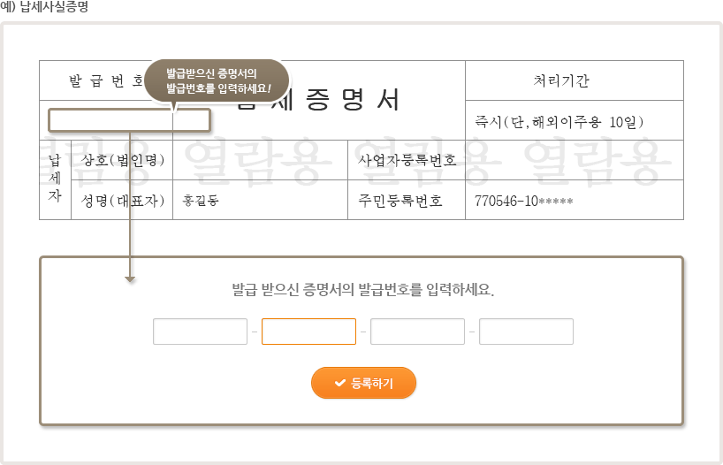

홈
> 내 정보등록
> 등록방법안내
> 인터넷등록
> 납세사실증명
인터넷등록
인터넷등록 방법 순서
1. 정보입력
2. 정보확인 및 담당자 정보입력
3. 등록완료
1. 정보입력
- 각 증명서 사이트 또는 각 관련기관에 방문하여 증명서를 발급합니다.
- 발급받은 증명서의 발급 번호(확인 가능 번호)를 입력합니다.

2. 정보확인 및 담당자 정보입력
-
등록요청이 완료 된 후 담당자가 정보를 확인하여 전산처리됩니다.
* 입력 기간은 약 2~3일 정도 소요되며, 입력 후 회원가입 시 등록한 E-mail과 휴대전화로 안내문을 발송합니다.
3. 등록완료
- 입력된 정보가 등록한 자료와 동일한지 확인 후 확인완료 버튼을 눌러주십시오.
- 모든 절차가 끝나면 제출하신 정보가 K-Score 및 K-Point에 적용됩니다.